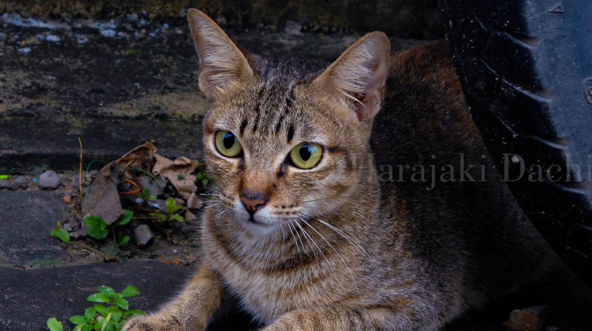

Hi, I’m Hara.
I design and build clear, useful things.
I’m learning web development by building small projects and photographing everyday street life.
Selected work
A minimal focus timer I built while learning web development.
View project
It taught me how timers, alerts, and smooth animations work, and I kept the design simple so it's easy to use.
A stray tabby resting beside an old tire, alert and watching something just out of frame. I edited it dark and moody, so the warm fur and green eyes glow against the cool, shadowed concrete.
About
I started building websites to make things I actually want to use, like a timer that keeps me focused without getting in the way.
Photography is the other half of what I do. I look for quiet moments on the street around Batam, and I’m still figuring out my own style as I go.